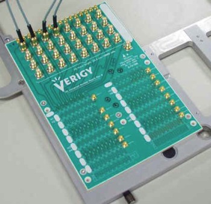

Pin Scale HX card universal access board example
The Pin Scale HX card Universal Access Board (UAB) allows to access all Pin Scale HX card channels in a card cage.
| Supported V93000 systems : Pin Scale, HSM |
The following figure shows the Pin Scale/HSM HX Universal Access Board.

The design objectives for the board were:
- Access to all Pin Scale HX channels
- SMA connectors to probe signals
- Stripline routing
- All lines should be phase matched
- Flexible test head mounting
- 10+ Gb/s Performance
These objectives led to the following design:
- Trace geometry: 19 mil stripline for reduced skin effect loss
- Dielectric material: Rogers4350 for reduced dielectric loss
- Vias: All vias back drilled for improved impedance matching
Functional changes
- Introduced before SmarTest 6.3.2